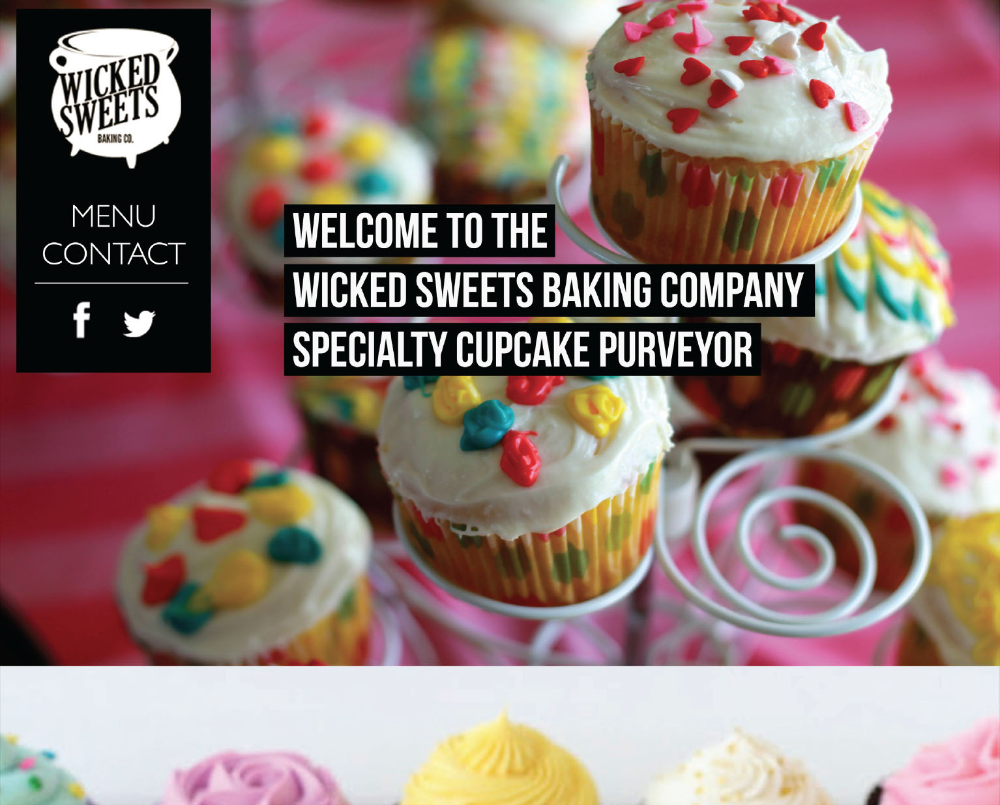
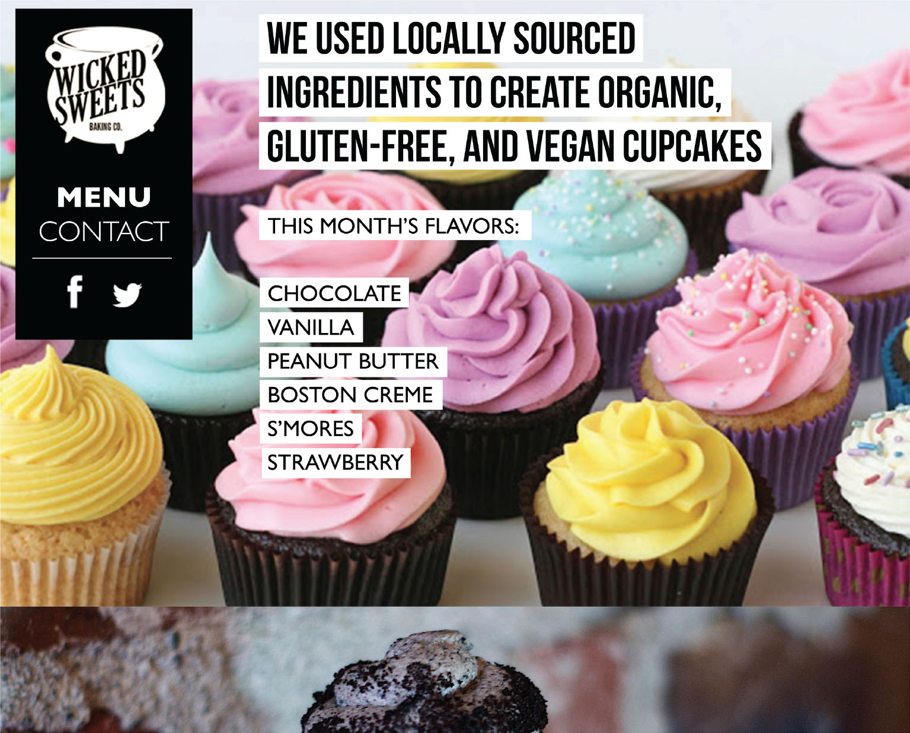
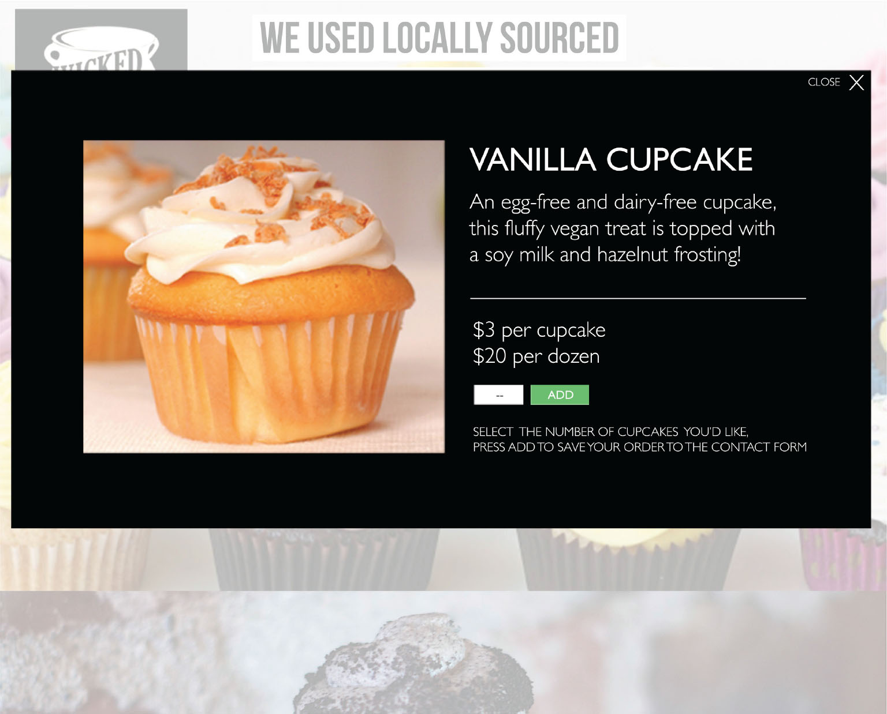
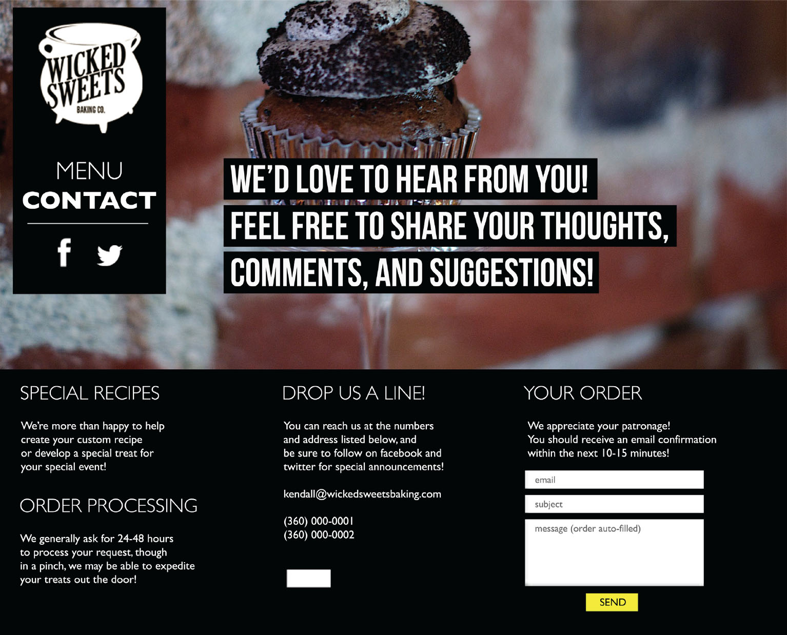

The Wicked Sweets baking company was a Washington State small business that specialized in vegan cupcakes in the early 20-teens. They primarily sold cupcakes at farmer’s markets in and around the Olympia/Tacoma area, and catered the occasional wedding. A husband and wife team, they approached me needing a web presence.
The challenge in this project was that the Wicked Sweets team didn’t have a dedicated kitchen to prepare their goods, operating out of a co-op kitchen instead. The co-op kitchen meant they had to rent out time to be in the space, and with scheduling availability always uncertain, they couldn’t guarantee they could fulfill an order.
The solution was a one-page site that allowed customers to browse through cupcake options, and place an order request, which was sent via email to the Wicked Sweets team. Customers would “shop”, with their selections added (through a bit of PHP) to a contact form at the bottom of the onepage site. Essentially an e-commerce site without the checkout process. Once users submitted the form, an email alert would let the Wicked Sweets team know they had an order request so they could promptly respond.
